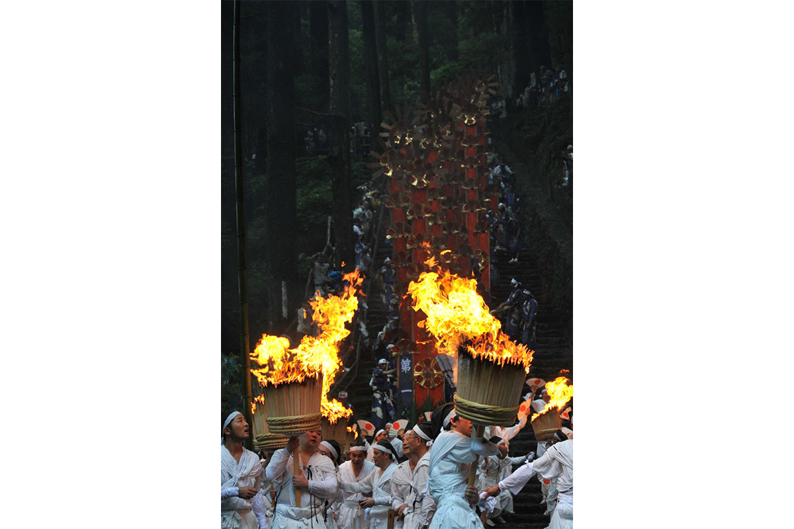
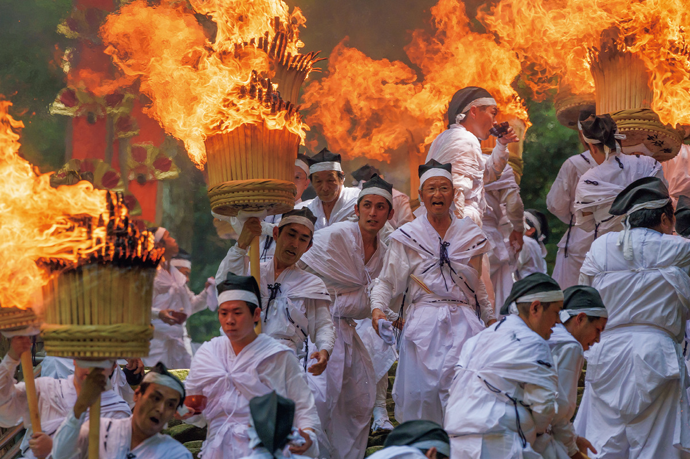
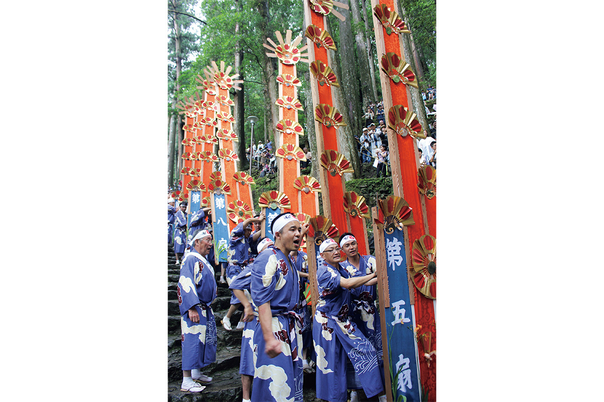
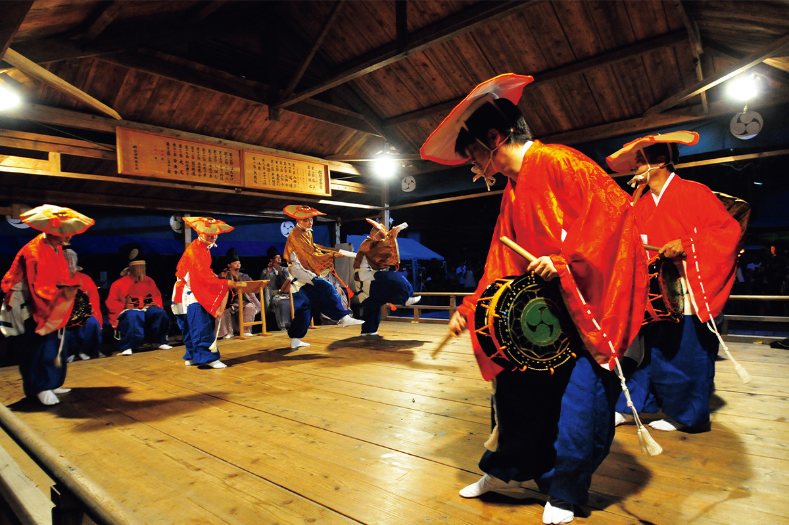

Префектура Вакаяма · Нати-Кацуура · праздник
Огненный праздник Нати: факелы, веерные паланкины и водопад, к которому возвращается божество

Раз в году божество святилища Кумано Нати-тайся возвращается к водопаду Нати, своему родному дому. Его несут в высоких веерных паланкинах, а дорогу очищают огнём двенадцати огромных факелов.
Праздник
Божество возвращается домой
Святилище Кумано Нати-тайся в городке Нати-Кацуура на юге префектуры Вакаяма входит в число трёх великих святилищ Кумано. Его главный ежегодный праздник «Нати-но оги-мацури», праздник вееров, проводят каждое 14 июля.
Двенадцать «оги-микоси», веерных паланкинов, которые, как считается, изображают солнце, несут от главного здания святилища к водопаду Нати. Участники молятся о богатом урожае и благополучии в доме. Водопад почитается как тело божества святилища Хиро-дзиндзя, младшего святилища Кумано Нати-тайся, поэтому праздник называют ещё ежегодным возвращением бога в родные места.
Важную роль в нём играют двенадцать огромных факелов, и отсюда второе название: «Нати-но хи-мацури», огненный праздник Нати. Вера Кумано выросла из почитания природы, и этот праздник можно назвать её символом.
Главное
Факелы по 50 килограммов

Знаток японских праздников, который рассказал нам об Оги-мацури, советует смотреть прежде всего на факелы. Каждый весит около 50 кг. Их делают местные жители из расщеплённых досок кипариса хиноки, собранных в форме кадки. Мужчины вскидывают факелы на плечи с криками «Харя! Харя!».

Не меньше впечатляют и сами паланкины. Каждый высотой около 6 метров и изображает водопад Нати.
Танец
Дэнгаку, который помнит Средневековье

В день праздника на специальной сцене святилищу подносят разные исполнительские искусства. Самое известное из них «Нати-но дэнгаку», танец, внесённый в список нематериального культурного наследия ЮНЕСКО. В нём сохранились черты средневековых представлений: танцоры в костюмах дэнгаку исполняют неторопливый торжественный танец.
«Нати-но оги-мацури», святилище Кумано Нати-тайся
- Адрес
- префектура Вакаяма, уезд Хигаси-Муро, Нати-Кацуура, Натисан, 1
- Даты
- ежегодно 14 июля
- Как добраться
- от станции Кии-Кацуура линии JR автобусом «Кумано Гобо Нанкай» до остановки Натисан около 30 минут, на такси около 20 минут